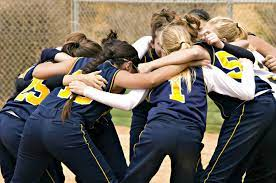
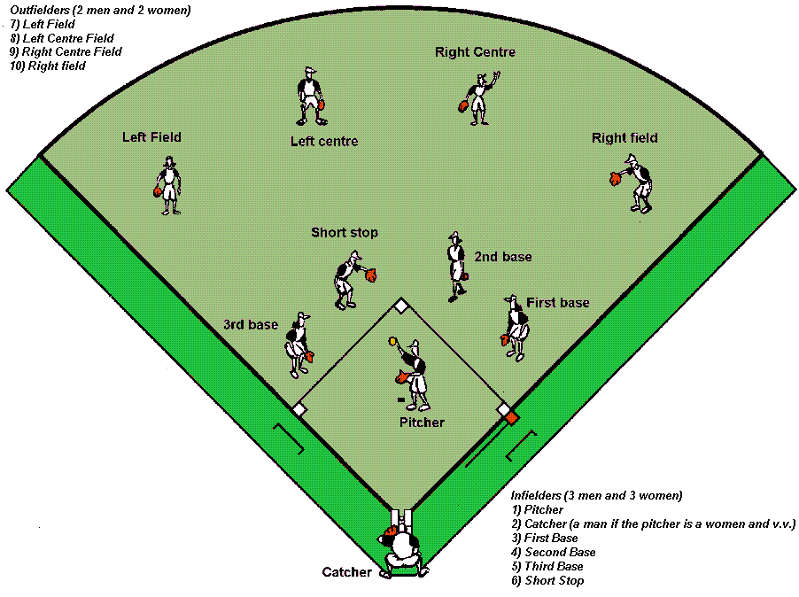
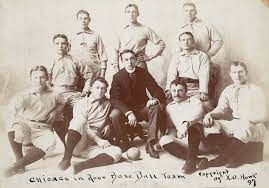

Softball

Disription of what softball is.
Softball is a game of ball between two, nine- or ten-player teams played usually for seven innings on a field that has as focal point a diamond-shaped dirt infield with a home plate and three other bases,60 feet (18,29 meters) apart, forming a cicuit that must be completed by base runner in order to score.
Why softball is good for you.
Softball is a good sport to try out for because,It not only benefits your physical health but also has a positive impact on your mental well-being.It also improves teamwork skills to develop self-confidence and leadership
Why softball such a liked sport is.

Softball has grown in populatiry due to its accessibility, it requires much less specialized equipment than other sports like soccer or football, as well as its focus on teamwork and camaraderie rather than idividual preformances. Softball is a Strategic sport, which requires coaches to be ahead of their game and the athletes be able to plan their next move
The basic rules of softball
- Two teams (of nine players) alternate turns at batting and fielding (often called defense).
- The aim for the team batting is to advance a runner around all bases to the home plate to score runs.
- The defending team tries to defend its bases by getting three outs and not allowing the batting team to score.
- The team that scores the most runs in seven innings wins. (A tiebreaker procedure comes into play if the scores are tied after the seventh innings.)
- Each team's innings ends when three of its batters have been ruled out and then the team that was defending goes in to bat.
The playing field
- There are four bases (first base, second base, third base and home plate) on the field of play.
- The lines between the bases are generally 45 to 60ft (approximately 12 to 18m) apart and when joined they form a ‘diamond’.
- Inside the diamond is the infield which contains the pitcher’s plate from which the pitcher throws the ball underarm; outside the baselines is the outfield.
- Any ball going outside the first or third base line is a foul ball (runners are not allowed to advance and the batter gets another try unless the ball was caught in the air, in which case they are out).
So how can a batter or runner be given out
- A batter or runner is out in the following circumstance
- If the ball is caugth right after the batter has hit it with out it bouncing first
- If the ball gets thrown to a base before the runner gets there the runner is out
- If the runner gets tagged before getting to the base(the runner has to be touched with either the ball or the glove of the defending person)
- If three stikes ar called by the umpire
- They run mire than 3ft(0.9m) out of the base of the line to avoid being tagged
The history of softball
Softball began in 1887 at the Farragut Boat Club in Chicago, USA, when George Hancock, a reporter for the Chicago Board of Trade, invented “indoor baseball”. By the spring of 1888, the game had spread outdoors.
In 1895, the firs women’s team was formed in Chicago. At the same time, the sport was reinvented, taken outdoors and called “mushball”, “kitten ball” or “indoor baseball”, but by th 1920s it had acquired the name of “softball”.
The sport became organised in the United States in 1933 with the formation of the Amateur Softball Association of America (ASA). The sport was originally played by men and did not become popular with women until the formation of the ASA.
Softball spread slowly to the rest of the world with, perhaps, its biggest push coming from American servicemen playing and teaching the game on the far-flung fields of World War II.
It was not until 1965 that the International Softball Federation (ISF) was formed. Author Karen Christensen, in the Encyclopedia of World Sport, notes that softball spread to the United Kingdom because of an American movie. The movie, “A Touch of Class”, was filmed in London and featured a softball game, which began to be played in England as a result.
World championships in fast pitch softball were first held in 1965 for women and 1966 for men. Slow-pitch world championships began in 1987, and the competition resumed in Florida (USA) in June of 2002. The first world competition for junior men and women was held in 1981 and a World Cup for age 16-under girls began in 2001.
Since then the game grew rapidly and is now played by more than hundreds of million people around the world.
Click here to learn how to hit a softball